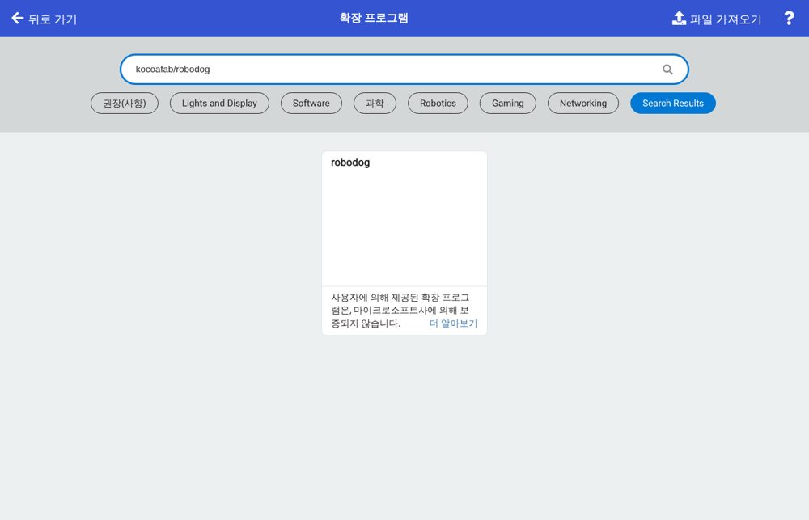
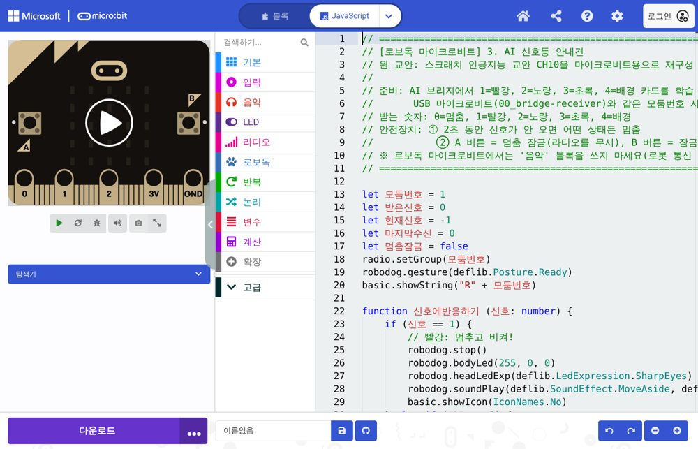
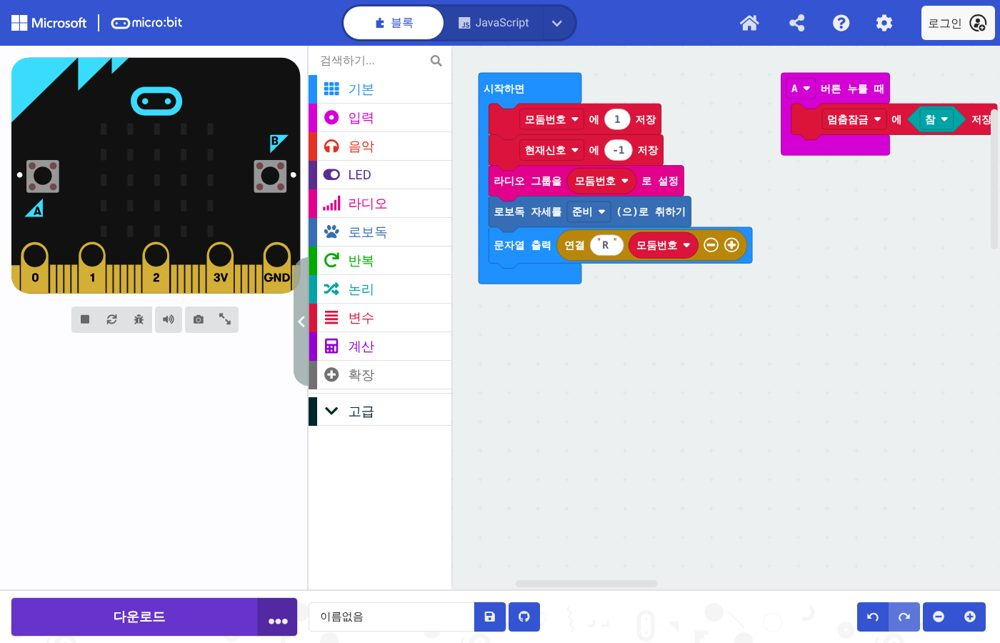

예제 따라 하기 — 본체 버튼 · 라디오 리모컨 (처음 하는 분용)
로보독을 처음 만지는 분도 위에서부터 순서대로 하면 되도록 썼어요.
먼저 알아 두기 — 새로 넣은 예제(10, 12, 20, 21, 22, 23)는 시뮬레이터에서만 확인했어요. 수업에 쓰기 전에 실물 로보독에서 한 번 해 보세요. 걷는 예제는 항상 바닥에서 해요.
처음이면 이 순서로 보세요: 이 문서(시뮬레이터 → 실물) → 블록 한눈표(내 아이디어 만들기) → 운영 가이드(수업 준비).
미리 알면 좋은 말
| 말 | 뜻 |
|---|---|
| 마이크로비트 | 로보독 등에 꽂는 작은 컴퓨터. 로보독의 두뇌예요 |
| MakeCode(메이크코드) | 마이크로비트에 넣을 코드를 블록으로 만드는 웹사이트 |
| 확장 | MakeCode에 로보독 블록 꾸러미를 더하는 것. 한 프로젝트에 한 번만 하면 돼요 |
| 다운로드 / .hex 파일 | 만든 코드를 마이크로비트에 넣는 일 / 그때 생기는 파일 |
| 본체 버튼 | 로보독 아래쪽 전원 스위치 옆 작은 버튼 |
| 라디오 | 마이크로비트끼리 숫자를 주고받는 전파(인터넷 필요 없음) |
| 모둠 번호 | 라디오의 채널 번호(코드에서는 라디오 그룹). 같은 번호끼리만 들려요 |
| 변수 | 숫자를 담아 두는 이름표 상자(예: 모둠번호, 가까움기준) |
| AI 브리지 | 카메라로 카드를 알아보고, 그 결과를 숫자로 로보독에 보내 주는 웹 화면 |
예제는 두 갈래
| 갈래 | 필요한 것 | 어떻게 시작하나 |
|---|---|---|
| 🔘 본체 버튼으로 해 보기 | 로보독 + 마이크로비트 1개 | 로보독의 본체 버튼을 누르면 시작 |
| 📡 라디오 리모컨으로 해 보기 | 로보독 + 마이크로비트 2개(하나는 손에 드는 리모컨) | 리모컨의 A·B 버튼을 누르면 숫자가 날아가 로보독이 움직임 |
왜 마이크로비트의 A·B 버튼을 안 쓰나요? 로보독 등에 꽂으면 A·B 버튼이 가려져 누를 수 없어요. 그래서 로보독에서는 본체 버튼을, 멀리서 조종할 때는 리모컨(두 번째 마이크로비트)을 써요.
0. 먼저 시뮬레이터에서 해 보기 (로보독이 없어도 돼요)
- 사이트 위쪽 [시뮬레이터]를 엽니다.
- ② 코드 옆의 [예제 고르기] 상자를 누르면 🔘 본체 버튼 / 📡 라디오 리모컨 / 🛠 점검으로 나뉘어 있어요.
- 예제를 고르면 바로 아래에 "따라 하기" 상자가 나와요. 적힌 순서대로 누르면 돼요.
- 실행은 [▶ 실행], 멈춤은 [■ 정지], 처음 자리로는 [↺ 처음으로].
- 버튼은 로보독 화면 바로 위 줄에 나와요: [본체 버튼 누르기], [📡 리모컨] 1~4, [🅰 마이크로비트] A·B.
- 공간이 좁으면 오른쪽 환경 → 공간 크기에서 넓게 바꿀 수 있어요. 소리는 효과음 켜기를 눌러야 들려요.
1. 실물에 코드 넣는 법 (모든 예제 공통)
준비물: 컴퓨터(크롬·엣지), 마이크로비트, 데이터용 USB 케이블(충전 전용 케이블은 안 돼요), 충전된 로보독.
https://makecode.microbit.org 를 열고 새 프로젝트를 누릅니다. 이름은 아무거나 써도 돼요.
로보독 확장 넣기 (로보독 쪽 코드만. 리모컨 쪽 코드 ①에는 필요 없어요)
- 가운데 블록 목록 아래쪽 확장을 누릅니다(아래 그림 왼쪽 목록의 ⊕ 확장).
- 검색창에
kocoafab/robodog를 빠짐없이 전부 입력하고 엔터. (robodog만 치면 안 나와요) - 나온 robodog 카드를 한 번 누르면 블록 목록에 로보독이 생겨요.

예제 코드 붙여넣기
- 이 문서의 예제 파일 이름(예:
makecode/10_button-bark.ts)을 누릅니다. 파일이 내려받아지거나 글자 화면으로 열려요. - 글자 화면이면 Ctrl + A(전체 선택) → Ctrl + C(복사). 시뮬레이터 글자 코드 탭에서 복사해도 같아요.
- MakeCode 위쪽 가운데 {} JavaScript를 누르고, 안에 있던 글을 모두 지운 뒤 Ctrl + V(붙여넣기).

- 이 문서의 예제 파일 이름(예:
위쪽 블록 탭을 누르면 블록으로 보여요. 빨간 줄·물음표 블록이 없으면 성공이에요(있으면 2번 확장을 다시 확인).

마이크로비트에 넣기: 마이크로비트를 USB로 연결 → 왼쪽 아래 보라색 다운로드.
- "연결" 창이 나오면 안내대로 연결을 누르면 바로 들어가요.
- 연결 없이 .hex 파일이 내려받아지면, 파일 탐색기에서 그 파일을 MICROBIT 드라이브로 끌어다 놓아요. 마이크로비트 뒤쪽 불빛이 깜빡이다 멈추면 끝.
로보독용이면 로보독 전원을 끈 상태에서 마이크로비트를 로보독 등에 끝까지 꽂고 전원을 켜요.
2. 🔘 본체 버튼 예제 (마이크로비트 1개)
| 순서 | 예제 파일 | 무엇을 하나 | 난이도 |
|---|---|---|---|
| 본체 ① | makecode/10_button-bark.ts |
누르면 눈 반짝 → "멍멍" → 앞발 인사 | 쉬움 |
| 본체 ② | makecode/01_hello-robodog.ts |
누를 때마다 다음 장면: 인사 → 조금 걷기 → 앉기 | 쉬움 |
| 본체 ③ | makecode/02_distance-rule.ts |
누르면 걷다가 장애물 앞에서 멈춤(거리센서) | 보통 |
| 본체 ④ | makecode/12_button-explore.ts |
누르면 두리번 → 탐험, 벽 만나면 방향 바꾸기, 다시 누르면 멈춤 | 도전 |
따라 하기 (본체 ① 버튼 누르면 멍멍)
- 시뮬레이터에서 예제 ① 버튼 누르면 멍멍을 고르고 [▶ 실행].
- 로보독 화면 바로 위 [본체 버튼 누르기]를 누르면 로보독이 "멍멍" 하고 인사해요.
- 실물: 코드를 넣고 로보독 전원을 켠 뒤 본체 버튼을 눌러요.
코드의 핵심 (모든 본체 버튼 예제가 같은 틀)
let 이전버튼 = false
basic.forever(function () {
let 지금버튼 = robodog.getButton()
if (지금버튼 && !(이전버튼)) {
// 버튼을 "한 번 눌렀을 때" 할 일
}
이전버튼 = 지금버튼
basic.pause(50) // 0.05초 쉬기
})
지금버튼이 참이고이전버튼이 거짓이면 = 방금 누른 순간. 그래서 꾹 누르고 있어도 한 번만 해요.- [▶ 실행]만 누르면 로보독은 가만히 있어요. 본체 버튼을 눌러야 시작하는 게 정상이에요.
3. 📡 라디오 리모컨 예제 (마이크로비트 2개)
| 순서 | 예제 파일 | 어디에 넣나 | 무엇을 하나 |
|---|---|---|---|
| 리모컨 ① | makecode/20_remote-sender.ts |
리모컨(손에 드는 마이크로비트) | A = 1, B = 2, A+B = 3 보내기 |
| 리모컨 ② | makecode/21_remote-dog.ts |
로보독에 꽂는 마이크로비트 | 1 걷기 · 2 멈춤 · 3 오른쪽 돌기, 본체 버튼 = 멈춤 |
| 리모컨 ③ | makecode/22_remote-tricks.ts |
로보독에 꽂는 마이크로비트 | 1 인사 · 2 앉기↔서기 · 3 멍멍 (걷지 않음) |
| 리모컨 ④ | makecode/03_ai-traffic-dog.ts |
로보독 | AI 브리지가 리모컨 역할: 카드 색에 따라 걷기·기다리기·멈추기 |
| 리모컨 ⑤ | makecode/04_ai-team-template.ts |
로보독 | 우리 모둠이 번호마다 행동을 정하는 빈 틀 |
| 리모컨 ⑥ | makecode/23_remote-safe-dog.ts |
로보독 | ②에 거리센서를 더함: 걷다가 앞이 가까우면 스스로 멈춤 (도전) |
따라 하기 (리모컨 ② 리모컨으로 움직이기)
- 마이크로비트 두 개에 이름표를 붙여요: "리모컨", "로보독".
- "리모컨"에 ①
20_remote-sender.ts를 넣고 배터리팩을 연결해요. 화면에 모둠 번호 1이 나와요. - "로보독"에 ②
21_remote-dog.ts를 넣고 로보독 등에 꽂아 전원을 켜요. - 로보독을 바닥에 놓고 리모컨 A → 걷기, B → 멈추기, A+B 함께 → 돌기.
- 위험하면 로보독 본체 버튼을 누르면 바로 멈춰요.
시뮬레이터에서는 리모컨 대신 로보독 화면 바로 위 [📡 리모컨] 줄의 [1] [2] [3] 버튼을 누르면 같아요(스크롤 없이 누르면서 바로 볼 수 있어요). 숫자 버튼은 한 번 누르면 한 번만 보내요. AI 신호등 안내견처럼 신호가 2초 끊기면 멈추는 코드는 같은 줄의 [계속 보내기]를 켜세요.
여러 모둠이 한 교실에서 할 때 — 모둠 번호
- 라디오는 같은 모둠 번호끼리만 들려요. 리모컨과 로보독 코드 맨 위
let 모둠번호 = 1의 숫자를 양쪽 모두 우리 모둠 번호로 바꾸세요(1모둠 = 1, 2모둠 = 2 …). - 다른 모둠 리모컨에 우리 로보독이 움직이면 모둠 번호가 같은 거예요.
4. 내 아이디어를 로보독으로 만들기 (5단계)
예제를 해 봤다면, 이제 우리가 생각한 문제를 로보독으로 풀어 봐요.
말로 쓰기 — "벽에 가까워지면 짖고 물러나는 경비견"처럼 한 문장으로.
"만약 ~이면 ~한다" 표로 바꾸기 — 무엇을 알아보고(버튼? 거리? 리모컨 숫자? 카드?) 그때 무엇을 할지.
만약 (알아보는 것) 그러면 (할 일) 앞이 20보다 가까우면 멈추고 "멍멍", 뒤로 1초, 오른쪽으로 돌기 아니면 천천히 앞으로 비슷한 예제에서 출발하기 — 알아보는 것이 버튼이면 본체 ①, 거리면 본체 ③·④, 리모컨이면 리모컨 ②·⑥, 카드·색이면 리모컨 ④(AI 브리지). 필요한 블록은 블록 한눈표에서 찾아요.
시뮬레이터에서 시험하기 — 오른쪽 환경에서 장애물·벽을 놓고, 버튼 줄로 신호를 보내 봐요.
고치기 — 표와 다르게 움직이면 한 번에 한 곳만 고치고 다시 시험해요. 된다면 실물에 넣어 바닥에서 확인!
자주 생기는 일: 장애물 앞에서 뒤로 간 다음 바로 앞으로 가면 앞뒤로 떨어요. 뒤로 간 뒤 돌기를 넣으면 해결돼요. 시뮬레이터 규칙 도우미에 1번 문장을 쓰면 코드 초안을 만들어 주기도 해요. 알아듣지 못한 말은 노란 안내로 알려 줘요.
5. 잘 안 될 때
| 증상 | 확인할 것 |
|---|---|
| 실행했는데 가만히 있어요 | 본체 버튼 예제는 본체 버튼을 눌러야 시작해요. 리모컨 예제는 숫자를 보내야 움직여요 |
| 리모컨을 눌러도 반응이 없어요 | ① 모둠 번호가 양쪽 같은지 ② 리모컨 배터리 ③ 로보독에 ①(리모컨 코드)을 잘못 넣지 않았는지 |
| 로보독이 엉뚱하게 움직여요 | 옆 모둠과 모둠 번호가 같은지 |
| 책상에서 떨어질 것 같아요 | 걷는 예제(본체 ③④, 리모컨 ②⑥)는 바닥에서. 책상에서는 리모컨 ③(걷지 않음)을 쓰세요 |
| MakeCode에 빨간 줄·물음표 블록이 생겨요 | 확장 kocoafab/robodog을 추가했는지 확인 |
| 컴퓨터에 MICROBIT 드라이브가 안 보여요 | 충전 전용 케이블일 수 있어요. 데이터용 케이블로 바꾸기 |
| 걷다가 주저앉거나 떨어요 | 배터리 부족. 충전하고 다시 해 보기(점검 예제 makecode/00_check-robodog.ts의 몸통 불빛 초록 = 충분) |